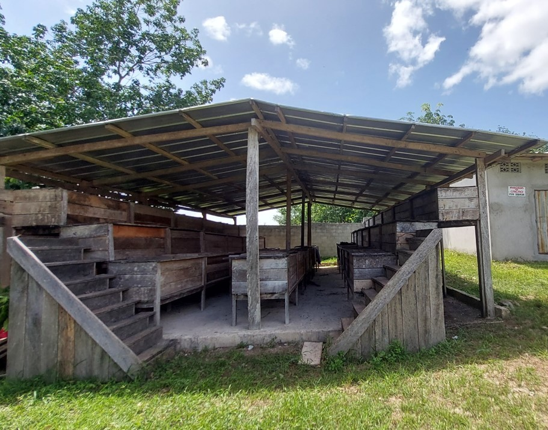
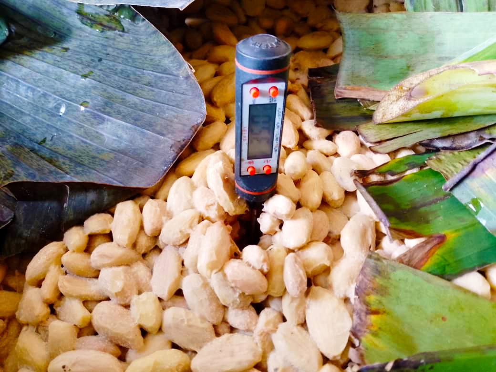
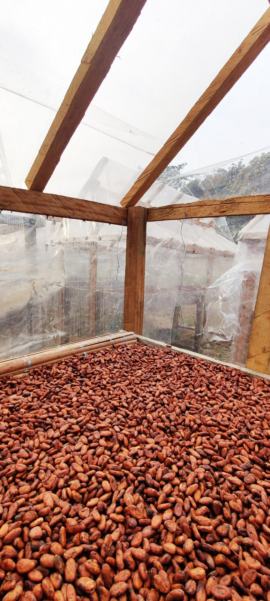

Le processus du cacao Fine Saveur : Une stratégie de valeur basée sur le goût
Depuis 2020, Ecakoog est sur le marché de l'exportation avec ses produits certifiés et souhaite ajouter de la valeur avec le cacao fine saveur et surtout le cacao fine saveur biologique produits dans des conditions respectueuses de l’environnement. Nous abordons les problèmes de la filière avec un processus post-récolte surveillé pour produire des saveurs et des arômes uniques.
1. Sensibilisation et Identification
La première étape consiste à sensibiliser, identifier et conclure un contrat avec les producteurs volontaires. Nous construisons des centres de traitement des fèves (création d'emplois), nous nous engageons à acheter 100 % du volume avec une prime, et nous formons les agriculteurs aux normes de qualité du cacao Fine Saveur.
2. Création de Valeur Technique
Nous appliquons une création de valeur basée sur 4 critères :
- Achat de matières premières de haute qualité (fèves fraîches).
- Utilisation d'équipements professionnels (caisses en bois, séchoirs solaires optimisés).
- Fermentation optimisée de 6 à 7 jours.
- Expertise de nos « chefs de centre » formés.
3. Partage de la Valeur
Notre stratégie de partage de valeur utilise plusieurs mécanismes :
Prime de qualité : Récompense pour les fèves humides de qualité supérieure.
Engagement d’achat total : Achat de la totalité des fèves certifiées, garantissant le revenu du producteur.
Bonus vente directe : Un montant spécifique facturé au client est reversé (30% en espèces aux producteurs, 70% pour des projets communautaires).
Nos Engagements
- Fermentation maîtrisée (6-7 jours)
- Achat de 100% de la production certifiée
- Primes de qualité attractives
- Bonus de vente directe
- Traçabilité et transparence
Impact Communautaire
Grâce au bonus de vente directe, nous finançons des projets communautaires essentiels tout en augmentant directement le revenu des producteurs en espèces.

